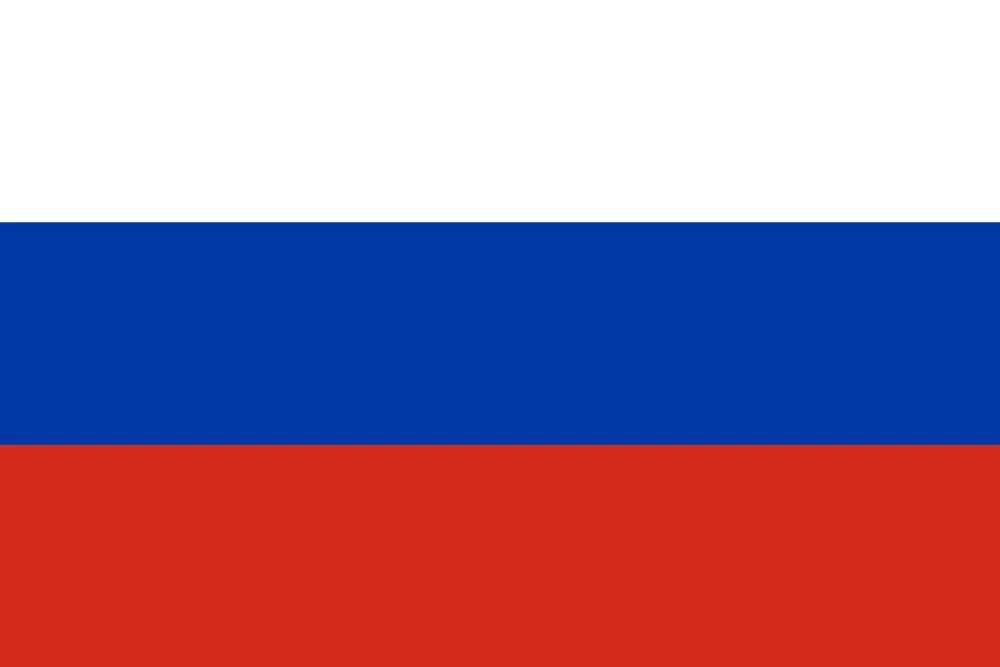

1. Garrincha Takes Over – Brazil’s One-Man Show
The 1962 World Cup was supposed to be another stage for Pelé to showcase his genius, leading Brazil to back-to-back titles. Instead, it became the tournament where Garrincha, the "Little Bird," carried an entire nation on his shoulders. His dazzling dribbles, unstoppable runs, and crucial goals turned him into the unlikely hero who delivered Brazil’s second consecutive World Cup trophy.
But the road to glory was anything but easy.
Brazil’s Rocky Start and Pelé’s Injury
Brazil entered the tournament as the reigning 1958 World Cup champions, boasting a squad filled with world-class talent. Pelé, just 21 years old, was already regarded as the best player in the world. Alongside him, Brazil had Garrincha, Vavá, Didi, and Zagallo, a fearsome attacking lineup. Expectations were sky-high.
The tournament started well enough. In their opening match, Brazil defeated Mexico 2-0, with Pelé scoring a stunning solo goal. He dribbled past four defenders before slotting the ball into the net—a moment of pure brilliance. However, in the next game against Czechoslovakia, disaster struck.
During a routine attacking move, Pelé pulled up with a serious thigh injury. He tried to play on but was clearly struggling. The match ended in a 0-0 draw, and Brazil’s medical team soon confirmed the worst: Pelé was ruled out for the rest of the tournament.
The entire nation feared the worst. Without their superstar, could Brazil still defend their title?
Garrincha Steps Into the Spotlight
If there was any doubt about who could fill Pelé’s shoes, Garrincha answered emphatically. The bow-legged winger had always been Brazil’s most unpredictable player—a magician with the ball, capable of dribbling past entire defenses with his effortless feints and lightning-quick changes of direction.
But Garrincha wasn’t just a skillful dribbler. He was also a free spirit, playing the game for the sheer joy of it. He had a unique ability to make football look fun, often humiliating defenders just for entertainment. Now, with Brazil’s World Cup hopes resting on him, he elevated his game to another level.
The Quarterfinal: Brazil vs. England (3-1) – Garrincha Runs the Show
In the quarterfinal against England, Brazil needed inspiration. Garrincha provided it.
From the start, he was unstoppable, tormenting England’s defenders every time he got the ball. His dribbling was mesmerizing, his movements unpredictable. In the 31st minute, he struck. A clearance from a corner landed at his feet, and without hesitation, he fired a powerful shot from outside the box. The ball swerved past the England goalkeeper and into the net.
England equalized shortly after, but Garrincha wasn’t done. In the second half, he set up Vavá for two goals, weaving past defenders before delivering perfect crosses into the box. Brazil won 3-1, and Garrincha had been involved in every goal.
The Semifinal: Brazil vs. Chile (4-2) – Garrincha at His Best
Facing host nation Chile in the semifinal, Brazil expected a hostile crowd and a tough battle. What they got instead was another Garrincha masterclass.
Just nine minutes into the game, Garrincha showed his genius. Picking up the ball outside the penalty area, he unleashed a stunning long-range shot that curved into the top corner—one of the best goals of the tournament. Fifteen minutes later, he scored again, this time with a powerful header.
Chile fought back, scoring twice, but Garrincha continued to dominate. His dribbling, passing, and movement caused chaos in Chile’s defense. Vavá added two more goals, and Brazil won 4-2, booking their place in the final.
However, the match ended with controversy. Garrincha was sent off in the dying minutes for retaliating against a rough challenge. Under normal circumstances, this meant he would be suspended for the final.
But such was his impact that Brazilian officials appealed to FIFA, arguing that Garrincha had been unfairly targeted with fouls throughout the tournament. In a controversial decision, FIFA allowed him to play in the final.
The Final: Brazil vs. Czechoslovakia (3-1) – Champions Again
With Garrincha leading the attack, Brazil faced Czechoslovakia in the final. The European side had given Brazil trouble in the group stage and took a 1-0 lead in the final through Josef Masopust.
But Brazil responded immediately. Within minutes, Amarildo, Pelé’s replacement, equalized with a brilliant finish. Then, in the second half, Zito and Vavá scored to complete a 3-1 victory.
Garrincha, though not on the scoresheet, had run the show once again, creating chances and dazzling the world with his skills. When the final whistle blew, Brazil had secured their second consecutive World Cup title.
A Tournament for the Ages
Garrincha finished the 1962 World Cup with:
• 4 goals (joint-top scorer)
• Countless assists
• Two Man of the Match performances (against England and Chile)
• A legacy as the tournament’s undisputed best player
He became the first player ever to win the World Cup Golden Boot (top scorer) and the Golden Ball (best player) in the same tournament. Even Pelé later admitted, "Without Garrincha, we would never have won in 1962."
The Legacy of Garrincha’s 1962 World Cup
Garrincha’s performance in 1962 remains one of the greatest individual tournament displays in football history. He took a Brazil team missing Pelé and carried them to glory, mesmerizing fans with his dribbling, scoring crucial goals, and proving that football is as much about joy and improvisation as it is about tactics and strategy.
To this day, Brazilian fans remember the 1962 World Cup not just as another victory, but as the tournament where Garrincha became a legend.

2. The Battle of Santiago – Football’s Most Violent Match
The 1962 FIFA World Cup had its fair share of breathtaking football, but no match was as infamous as the Battle of Santiago—a clash between Chile and Italy that remains one of the most violent games in World Cup history.
The match, played on June 2, 1962, in Santiago’s Estadio Nacional, descended into chaos, filled with brutal tackles, punches, and outright assaults. With tensions already boiling before kickoff, the game quickly turned into an all-out war, forcing the referee to send off two players and the police to intervene multiple times.
This is the story of the Battle of Santiago, a match that redefined the limits of aggression in football.
Pre-Match Hostilities: A War of Words
The tension between Chile and Italy began long before the match itself. In the lead-up to the tournament, two Italian journalists from "La Nazione"—Antonio Ghirelli and Corrado Pizzinelli—wrote scathing articles about Chile.
They described Santiago as a poverty-stricken, crime-ridden city, mocked Chile’s World Cup preparations, and insulted Chilean women, calling them "short, ugly, and in desperate need of a bath."
These comments infuriated Chileans. In response, Chilean newspapers launched a campaign against Italy, labeling their players as arrogant and disrespectful. By the time the two teams met on the field, the atmosphere was poisonous.
Kickoff: A Match Fueled by Hatred
From the opening whistle, it was clear that this wasn’t going to be a normal football match.
Within the first 12 seconds, the first foul was committed. Within the first 12 minutes, the first punch was thrown. The players weren’t just competing for the ball—they were fighting each other.
The referee for the match was Ken Aston, an Englishman who would later invent the yellow and red card system. That day, he had no control over the game.
• Italian midfielder Giorgio Ferrini committed a vicious foul early on and was shown a red card. However, Ferrini refused to leave the field, standing his ground for several minutes as teammates and officials argued with the referee. Eventually, the police had to escort him off the pitch.
• Chilean forward Leonel Sánchez punched Italian defender Mario David in the face after a rough challenge. The referee ignored it completely.
• Moments later, David retaliated with a flying kick to Sánchez’s head, and this time, Aston sent him off—leaving Italy with just nine men.
With Chile having a two-man advantage, the Italians became increasingly desperate, committing more horrific tackles, while the Chileans responded with punches and elbows.
Throughout the match, Ken Aston struggled to keep order, but without yellow or red cards (which didn’t exist yet), he could only issue warnings and dismissals. It was a lawless battle, and the police had to intervene three times to prevent fights from escalating further.
Chile Takes the Lead – Chaos Continues
Amidst the violence, some actual football was played.
Despite the aggressive Italian defense, Chile’s Jaime Ramírez broke the deadlock in the 73rd minute, slotting the ball past goalkeeper Lorenzo Buffon.
Minutes later, Jorge Toro doubled the lead with a powerful strike, sealing Chile’s 2-0 victory.
As the final whistle blew, the match ended as one of the most disgraceful spectacles in football history.
Aftermath: Fallout and Legacy
The Battle of Santiago shocked the world. BBC commentator David Coleman, who narrated the game, famously introduced the broadcast by saying:
"Good evening. The game you are about to see is the most stupid, appalling, disgusting, and disgraceful exhibition of football, possibly in the history of the game."
FIFA immediately came under pressure to prevent such violence in future tournaments. Ken Aston, disturbed by what he had witnessed, later developed the yellow and red card system, which was introduced in the 1970 World Cup to better control disciplinary issues.
Despite the controversy, Chile continued their impressive tournament run, reaching the semifinals for the first and only time in their history. For Italy, the loss marked a disastrous campaign, and they were eliminated in the group stage.
To this day, the Battle of Santiago remains one of the most notorious matches ever played, serving as a reminder of how football, when fueled by national pride, pre-match hostilities, and unchecked aggression, can spiral into absolute chaos.

3. Pelé’s Injury – The End of Brazil’s Dependence on Their King
The 1962 FIFA World Cup was supposed to be Pelé’s tournament. At just 21 years old, he was already the reigning world champion and widely considered the greatest player in the world. After his dazzling performances in Sweden 1958, where he scored six goals and led Brazil to their first-ever World Cup, fans and pundits expected even greater things from him in Chile.
But fate had other plans.
What should have been Pelé’s coronation as the undisputed king of football turned into a heartbreaking campaign, as an untimely injury in Brazil’s second match forced him out of the tournament. For many teams, losing their star player would have been a death sentence. But this was Brazil—and their response to adversity proved the true depth of their greatness.
A Stunning Start – Pelé Dazzles Against Mexico
Brazil entered the 1962 World Cup as the clear favorites. They had kept the core of their 1958-winning squad, led by Pelé, Garrincha, Didi, and Vavá, and their attacking style of samba football remained as mesmerizing as ever.
Their opening match against Mexico was a chance to make a statement, and Pelé wasted no time proving why he was the world’s best.
After setting up Mário Zagallo for Brazil’s opening goal, Pelé scored one of the best solo goals of the tournament, dribbling past four defenders before calmly finishing past the Mexican goalkeeper. It was a goal that showcased his breathtaking skill, balance, and composure, and it left the football world convinced that Pelé was about to dominate the 1962 tournament.
Brazil won 2-0, and everything seemed to be going according to plan.
Disaster Strikes – Pelé’s Tragic Injury
Brazil’s second group match, against Czechoslovakia on June 2, started with the same confidence. However, midway through the first half, disaster struck.
Pelé, after attempting a long-range shot, suddenly pulled up in pain. He had suffered a serious muscle injury in his thigh, and with no substitutions allowed at the time, he was forced to stay on the field, limping and barely able to move. Brazil essentially played the rest of the match with ten men.
Despite their efforts, they couldn’t break through Czechoslovakia’s defense, and the match ended in a 0-0 draw.
Pelé’s injury was severe enough that he was ruled out for the rest of the tournament. Brazil’s worst fears had come true—their biggest star, the man who had carried them to glory in 1958, was out.
Many believed that without Pelé, Brazil’s hopes of winning back-to-back World Cups had vanished.
Enter Garrincha – The Unexpected Savior
With Pelé sidelined, the responsibility of leading Brazil fell on the enigmatic, unpredictable genius of Garrincha.
Unlike Pelé, who was a complete player with technical brilliance and vision, Garrincha was a raw, instinctive dribbler who could humiliate defenders with his unpredictable moves. He had already played a key role in Brazil’s 1958 triumph, but now, with Pelé gone, he was expected to carry the team on his own.
What happened next was nothing short of legendary.
• In the quarterfinals against England, Garrincha was unstoppable, scoring two brilliant goals in a 3-1 victory.
• In the semifinals against Chile, he produced one of the greatest individual performances in World Cup history, scoring twice and assisting another in a 4-2 win.
• In the final against Czechoslovakia, despite being tightly marked, he played a crucial role in Brazil’s 3-1 triumph, helping his team retain the World Cup.
Garrincha’s performances were so extraordinary that he became the first and only outfield player to win the Golden Ball (best player), Golden Boot (top scorer), and the World Cup in the same tournament.
The Legacy of Pelé’s Injury
While Pelé’s injury was a heartbreaking moment in the 1962 World Cup, it ended up proving that Brazil was not a one-man team.
Their triumph in Chile was a testament to the depth of Brazilian football, as players like Garrincha, Vavá, and Didi stepped up in his absence. It also cemented Garrincha’s place as a legend, as he carried Brazil to glory in a way that only he could.
For Pelé, the injury was a painful reminder of football’s unpredictability. He would return in 1966, only to be kicked out of the tournament by violent defending. But in 1970, he would have his redemption, leading Brazil to their greatest-ever World Cup victory.
Despite missing most of the 1962 tournament, Pelé still collected his second World Cup winner’s medal, making him, at the time, the youngest player in history to win two World Cups.
The 1962 World Cup will always be remembered for Garrincha’s brilliance, but it also stands as a powerful example of how Brazil, even without their greatest-ever player, still found a way to win.
4. Czechoslovakia’s Stunning Final Run – The 1962 World Cup’s Greatest Underdog Story
The 1962 FIFA World Cup in Chile was expected to be dominated by the usual football powerhouses—Brazil, Italy, and West Germany. But in one of the greatest underdog stories in World Cup history, Czechoslovakia defied expectations, stunning the football world by making it all the way to the final.
Led by the elegant and intelligent Josef Masopust, a midfielder who would later win the Ballon d’Or, Czechoslovakia wasn’t the most talented or physically imposing team in the tournament. However, they compensated with tactical discipline, a rock-solid defense, and a midfield that could control the tempo of any game. Against all odds, they navigated past giants of the game and found themselves one step away from immortality.
A Tactical Masterclass in the Group Stage
Czechoslovakia entered Group 3 alongside Spain, Brazil, and Mexico—an extremely challenging draw. Few believed they had the quality to advance. But discipline and organization would become their greatest weapons.
Their campaign started with a tactical masterclass against Spain, one of the tournament’s most dangerous teams. Spain, boasting stars like Ferenc Puskás, were expected to dominate. But Czechoslovakia’s rigid defensive shape frustrated their opponents. With a perfectly executed counterattack, they secured a 1-0 victory, shocking the world and putting the tournament on notice.
Next came Brazil, the reigning champions. Everyone expected a comfortable win for the South Americans, especially with their attacking force led by Garrincha, Vavá, and Zagallo. But Czechoslovakia, aware of their technical inferiority, set up an impenetrable defensive wall and played for a draw. The strategy worked. The match ended 0-0, proving that this Czechoslovakian side had the discipline and intelligence to go far.
A final 1-1 draw against Mexico sealed their place in the knockout stage, as they advanced behind Brazil. The underdogs had survived the so-called “Group of Death.”
Knockout Stage – The Underdog Spirit
Czechoslovakia’s quarterfinal opponent was Hungary, a team still dangerous despite not being as dominant as their legendary Magical Magyars of the 1950s. Many expected the Hungarians to overpower them, but once again, Czechoslovakia’s defensive organization and opportunistic attack proved to be decisive. With a brilliantly worked goal, they won 1-0, continuing their fairytale run.
In the semifinals, they faced Yugoslavia, another strong European team. This match showcased not just Czechoslovakia’s resilience but also the brilliance of Masopust, who controlled the midfield with grace and composure. After a hard-fought game, Czechoslovakia emerged victorious 3-1, earning their spot in the World Cup final.
The world could hardly believe it. This was a team that was not expected to be in the conversation, yet they had fought past stronger, more celebrated teams with smart, disciplined football.
The Final – A Moment of Hope, Then Heartbreak
On June 17, 1962, in front of a packed crowd at the Estadio Nacional in Santiago, Czechoslovakia stepped onto the pitch for the biggest match in their history. Their opponents? Brazil, the defending champions, even without their injured talisman Pelé.
Brazil, despite Pelé’s absence, still had Garrincha, Vavá, and Amarildo, and they were widely expected to retain their crown. But Czechoslovakia had already silenced doubters throughout the tournament. Could they do it one last time?
Incredibly, they struck first.
In the 15th minute, Josef Masopust, their leader and midfield general, made a well-timed run into the box and finished a low strike past Brazilian goalkeeper Gilmar. It was a stunning moment—Czechoslovakia was leading the World Cup final. For a brief moment, it seemed like football’s greatest upset might unfold.
But Brazil responded like champions.
Just two minutes later, Amarildo, who had replaced Pelé in the tournament, equalized with a precise finish from an almost impossible angle. The game was level again, and Czechoslovakia, despite their heroics, now had to withstand relentless pressure from the South Americans.
In the 69th minute, disaster struck. Czechoslovakia’s goalkeeper Viliam Schrojf, who had been sensational throughout the tournament, made a rare mistake, failing to collect a cross properly. Zito was there to capitalize, heading Brazil into the lead.
With time running out, Czechoslovakia had to push forward, leaving gaps at the back. In the 78th minute, Brazil struck the final blow—Vavá scored after another defensive lapse, making it 3-1 and sealing the match.
The dream was over.
A Legacy That Endures
Though they fell at the final hurdle, Czechoslovakia’s 1962 team remains one of the most celebrated underdog stories in World Cup history.
Josef Masopust, the heartbeat of the team, was later awarded the Ballon d’Or, cementing his status as one of the best players of his generation. Their journey to the final proved that intelligence, tactical discipline, and team spirit could overcome superior talent.
Even today, their unexpected march to the final serves as inspiration for smaller footballing nations, showing that anything is possible on the grandest stage.
5. The Soviet Union’s Controversial Exit – A Quarterfinal Clash of Drama and Controversy
The 1962 FIFA World Cup quarterfinal between the Soviet Union and Chile was a match drenched in drama, controversy, and raw emotion. Played on June 10, 1962, at the Estadio Carlos Dittborn in Arica, it was supposed to be a straightforward victory for the Soviet Union, who entered the tournament as one of the strongest teams in the world.
Boasting the legendary Lev Yashin, the only goalkeeper to ever win the Ballon d’Or, and a squad filled with battle-hardened, technically gifted players, the Soviets were tipped by many to go all the way in the tournament. Chile, on the other hand, were the plucky underdogs—a team with home advantage, fueled by the passion of their fans and riding an unexpected wave of momentum. What followed was one of the most contentious and fiercely debated matches in World Cup history.
Soviet Dominance from the Start
From the opening whistle, the Soviets controlled the game. They dictated the pace, controlled possession, and launched attack after attack against the Chilean backline. The Chileans, well aware that they were outmatched technically, opted for a more physical approach, throwing in hard tackles and disrupting the Soviet rhythm.
Despite their dominance, the Soviets struggled to break down Chile’s disciplined defense. When they did manage to break through, they found themselves facing an inspired performance from Chilean goalkeeper Misael Escuti.
Escuti, a veteran shot-stopper, produced save after save, denying the Soviets with astonishing reflexes. One particular save—where he leaped full stretch to tip away a thunderous shot from Igor Chislenko—was a moment of pure brilliance, sending the crowd into rapturous applause.
The Early Goals – A Tightly Contested Battle
Despite Escuti’s heroics, the Soviet Union finally found a breakthrough in the first half. After another period of sustained pressure, the ball found Valentin Ivanov, the prolific Soviet forward, who blasted a powerful shot past Escuti. 1-0 to the Soviet Union, and it looked like they were on their way to the semifinals.
But Chile, backed by a deafening home crowd, responded almost immediately. Just minutes later, the ball fell to Leonel Sánchez, Chile’s star winger. With a vicious left-footed strike, he buried the ball past Yashin to make it 1-1. The stadium erupted in celebration, and suddenly, the game was wide open again.
The Turning Point – A Questionable Penalty Decision
As the match progressed, the Soviets continued to press, throwing everything forward in search of the winning goal. But Chile stood firm, their defense clearing every dangerous ball while Escuti pulled off more miraculous saves.
Then came the match’s defining moment—one of the most controversial calls in World Cup history.
In the 84th minute, a long ball was played into the Soviet penalty area. Eladio Rojas, the Chilean midfielder, went down under minimal contact from a Soviet defender. The referee immediately pointed to the penalty spot, awarding Chile a penalty in what many viewed as a highly questionable decision.
The Soviet players were furious. They surrounded the referee, protesting furiously, arguing that Rojas had gone down too easily. Lev Yashin, normally a composed figure, voiced his frustration in what was an incredibly rare outburst from the iconic goalkeeper. But the referee stood firm—the penalty would stand.
Eladio Rojas and the Decisive Moment
With the match hanging in the balance, Eladio Rojas stepped up to take the penalty. The tension inside the stadium was palpable.
Yashin, famous for his ability to read penalties, stood on the goal line, staring down Rojas. The Soviet legend had saved countless spot-kicks before, and many in the crowd believed he would do so again.
But Rojas, unfazed by the pressure, sent a low, driven shot to Yashin’s right. The goalkeeper dived the right way, but the ball was struck with such precision and power that it sneaked past his fingertips and into the net. 2-1 to Chile. The stadium erupted into chaos, as the home fans celebrated wildly.
The Aftermath – Soviet Fury and Chilean Triumph
With only minutes left on the clock, the Soviets threw everything forward, desperately trying to find an equalizer. They launched wave after wave of attacks, but the Chilean defense held on.
When the final whistle blew, Chile had secured a stunning 2-1 victory and a place in the semifinals of the World Cup. The Chilean players collapsed in joy, while their Soviet counterparts were left in disbelief.
The Soviet team was outraged. Many claimed that the referee had been influenced by the Chilean crowd, pointing to the intimidating atmosphere and the pressure placed on officials. Some even suggested that FIFA wanted the host nation to progress, though no evidence ever surfaced to support such claims.
For Lev Yashin, the defeat was particularly painful. He had delivered a heroic performance, making several key saves, yet controversy had stolen the match from him. The Ballon d’Or-winning goalkeeper never won a World Cup, and this defeat would remain one of the biggest disappointments of his career.
Chile’s Unlikely Journey Continues
For Chile, the victory propelled them into the semifinals, marking one of the greatest achievements in their footballing history. They would eventually finish third, securing their best-ever World Cup result.
Eladio Rojas, the man at the center of the controversy, would go on to score again in the third-place match, cementing his status as a Chilean football hero.
A Match Remembered in History
Even today, the Soviet Union vs. Chile quarterfinal of 1962 remains one of the most debated matches in World Cup history.
• For Soviet fans, it was a match defined by injustice, where a controversial penalty decision denied them a fair chance at progressing.
• For Chileans, it was a moment of national pride, a hard-fought victory that took them to their greatest-ever World Cup finish.
Regardless of the perspective, one thing is certain—this match will always be remembered as one of the most dramatic and controversial World Cup quarterfinals of all time.
6. Vavá’s Place in History – The Forgotten Hero of Brazil’s Golden Era
When people talk about Brazil’s legendary World Cup teams, the names that often come to mind are Pelé, Garrincha, Jairzinho, Zico, Ronaldo, and Romário. Yet, one of Brazil’s most impactful World Cup heroes, a striker whose goals played a crucial role in securing back-to-back world titles, remains relatively unsung—Vavá.
While he may not carry the same global fame as Pelé or Garrincha, Vavá’s contributions to Brazilian football history are undeniable. His achievements place him among an elite class of players, and in 1962, he etched his name into the record books with a feat that took decades to be matched.
A Deadly Striker with a Knack for the Big Stage
Born Edvaldo Izidio Neto, but known simply as Vavá, the Brazilian forward was a classic number 9—a strong, clinical finisher with an instinct for scoring goals in big matches. His reputation was built on his toughness, ability to play under pressure, and a knack for scoring in crucial moments.
Brazil’s 1958 World Cup-winning team is often celebrated for Pelé’s emergence and Garrincha’s dazzling dribbles, but Vavá was equally crucial to their success. He scored twice in the final against Sweden, helping Brazil secure their first-ever World Cup title with a 5-2 victory. This made him one of only a handful of players to score twice in a World Cup final—a feat that placed him among the tournament’s greats.
1962 – The Challenge of Defending the Crown
When Brazil arrived in Chile for the 1962 World Cup, they were the defending champions and the team to beat. They had a squad filled with world-class talent, and many expected them to dominate the tournament once again.
However, Brazil’s campaign was rocked by an early disaster—their star player, Pelé, suffered an injury in the second group-stage match against Czechoslovakia, ruling him out for the rest of the tournament.
With Pelé gone, Brazil needed someone to step up and deliver in the biggest moments. This is where Vavá’s experience and leadership became invaluable. While Garrincha became the team’s most dazzling attacker, Vavá played the role of the reliable finisher, stepping up when Brazil needed him most.
The 1962 Final – Making History
Brazil’s journey through the tournament led them to the final against Czechoslovakia, a team that had surprised many with their solid defense and tactical discipline. Josef Masopust, Czechoslovakia’s captain and midfield maestro, stunned Brazil by scoring the opening goal, putting the underdogs 1-0 ahead.
For a brief moment, an upset seemed possible.
But just two minutes later, Brazil responded. Amarildo, the man who had replaced Pelé in the lineup, equalized with a stunning goal, restoring belief among the Brazilians.
Then came Vavá’s moment of history.
In the 69th minute, Brazil’s attack pressed forward, forcing Czechoslovakian goalkeeper Viliam Schrojf into a costly error. As Schrojf fumbled a cross, Vavá pounced on the loose ball and slotted it into the net. 2-1 Brazil.
It was a classic Vavá goal—a striker’s instinct, perfect positioning, and a calm finish under pressure. With that strike, Vavá became the first player in history to score in two different World Cup finals, adding to the two goals he had scored in the 1958 final against Sweden.
Brazil would go on to win 3-1, with Zito scoring the final goal to secure their second consecutive World Cup title. But it was Vavá’s go-ahead goal that had been the turning point—a moment that crushed Czechoslovakia’s hopes and sent Brazil on their way to glory.
A Record That Stood the Test of Time
For decades, Vavá remained the only player to have scored in two separate World Cup finals.
His record was eventually matched by some of the greatest names in football history:
• Pelé (1958, 1970) – His goals in the 1958 final against Sweden and the 1970 final against Italy ensured his place as the only three-time World Cup winner.
• Paul Breitner (1974, 1982) – The German midfielder scored in both the 1974 final (vs. the Netherlands) and the 1982 final (vs. Italy).
• Zinedine Zidane (1998, 2006) – The French legend scored twice in the 1998 final against Brazil and converted a penalty in the 2006 final against Italy.
But Vavá was the first to achieve this feat, forever securing his place in football history.
Legacy – The Unsung Hero of Brazilian Football
Despite his incredible achievements, Vavá’s name is often overshadowed by the more famous Brazilian legends like Pelé, Garrincha, and Romário. However, his contributions to Brazil’s golden era of football cannot be overstated.
• He scored 5 goals in the 1958 World Cup, including two in the final.
• He scored 4 goals in the 1962 World Cup, including one in the final.
• He remains one of only four players in history to score in two different World Cup finals.
• He played a crucial role in helping Brazil win their first two World Cup titles, ensuring their place as the dominant force in world football.
Vavá’s style was different from many Brazilian legends—he wasn’t a flashy dribbler like Garrincha or a creative genius like Pelé. But he was a warrior, a goal machine, and a leader—a player who thrived in the biggest moments and delivered when his country needed him the most.
Final Thoughts
Football history often remembers the most flamboyant and technically gifted players, but Vavá’s legacy as a World Cup legend should never be forgotten. He was a clutch performer, a big-game player, and a man whose goals helped Brazil become a footballing superpower.
His name might not always be the first mentioned in conversations about Brazil’s greats, but his place in World Cup history is unquestionable. Vavá was a champion, a record-setter, and one of Brazil’s greatest-ever strikers—a true legend of the game.